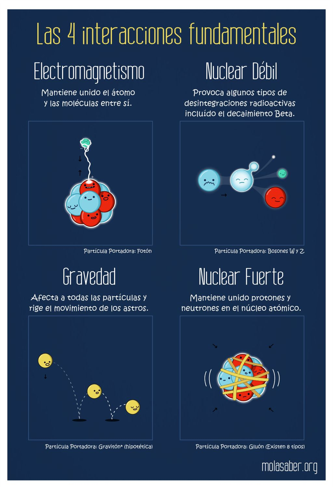

Las interacciones que mantiene unido el átomo

Solo hace un siglo que se conoce la estructura del núcleo del átomo. Esa composición única hecha a base de neutrones y protones colocados extremadamente cerca violaba todo lo que los científicos hasta el siglo XX sabían sobre la fuerza electromagnética que, en última instancia, afirmaba que dos partículas con cargas de igual signo siempre se repelían, se alejaban la una de la otra, y que cargas de distinto signo siempre se atraían.
Ahora bien, si como los experimentos habían demostrado el núcleo estaba compuesto por protones y estos tenían carga positiva, según las leyes del electromagnetismo estas partículas deberían separarse y, como consecuencia, los núcleos atómicos, y por tanto los átomos, no deberían existir. Dado que la realidad era contraria a lo que la teoría afirmaba, los científicos debieron de plantearse que debían existir otras fuerzas en la naturaleza, distintas de la electromagnéticas y la gravitatoria, que permitiera que los protones estuvieran tan próximos en el núcleo. A esta fuerza, más poderosa que la interacción electromagnética y la gravitatoria, que solo actuaba entre partículas que estaban muy muy próximas entre sí, en el núcleo del átomo, la llamaron fuerza o interacción nuclear fuerte.
Ahora bien, del mismo modo que había una fuerza nuclear fuerte que posibilitaba que los protones formaran parte del núcleo se dieron cuenta de que para que los neutrones formaran parte del núcleo también debía haber otra fuerza, mucho más débil que la interacción nuclear fuerte, generada por la interacción entre los neutrones y los protones. A esta fuerza, que al igual que la nuclear fuerte solo actuaba a distancia muy pequeñas, la denominaron fuerza o interacción nuclear débil.
Así que, en resumidas cuentas, podemos considerar que la energía nuclear o atómica es la energía que mantiene unidos neutrones y protones. Como toda energía podemos transformarla en otras formas de energía que nos puedan resultar más prácticas, como la eléctrica, pero para ello debemos liberarla
Ésta energía se puede obtener de dos formas: fusión nuclear y fisión nuclear. En la fusión nuclear, la energía se libera cuando los núcleos de los átomos se combinan o se fusionan entre sí para formar un núcleo más grande. Así es como el sol produce energía. En la fisión nuclear, los núcleos se separan para formar núcleos más pequeños, liberando energía. Las centrales nucleares utilizan la fisión nuclear para producir electricidad.
Cuando se produce una de estas dos reacciones nucleares (la fisión nuclear o la fusión nuclear) los átomos experimentan una ligera pérdida de masa. Esta masa que se pierde se convierte en una gran cantidad de energía calorífica y de radiación, como descubrió Albert Einstein con su famosa ecuación E=mc². La energía calorífica producida se utiliza para producir vapor y generar electricidad. Aunque la producción de energía eléctrica es la utilidad más habitual que se le da a la energía nuclear, también se puede aplicar en muchos otros sectores, como en aplicaciones médicas o medioambientales.